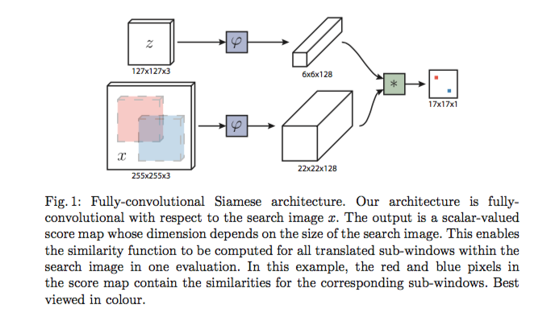
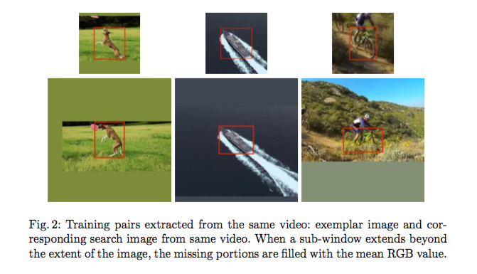
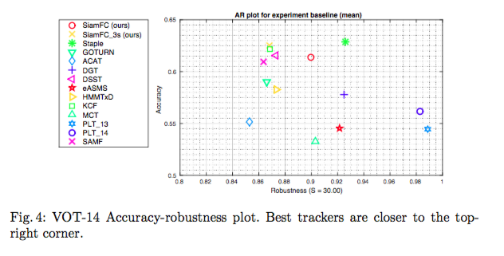
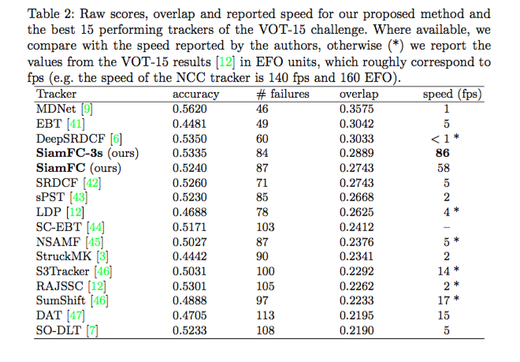

Fully-Convolutional Siamese Networks for Object Tracking
URL: https://arxiv.org/abs/1606.09549
Siamese-FC v1 , 利用Siamese网络来做跟踪，论文中把跟踪的任务定义为两个图像patch之间的相似度，通过计算两个图像patch之间的相似度来定位物体，通过多次rescale 输入图片来实现多尺度物体的跟踪。
下图是论文中给出的Siamese-FC v1基本的示意图：

网络的第一个分支为目标object，输入被resize到127x127，经过全卷积网络之后得到6x6x128的输出。
网络的第二个分支为搜索的图片，经过同样的全卷积网络之后也会得到相对应的输出比如上图的22x22x128, 这两个分支的输出最后会通过 cross- correlation 操作(第一个分支的输出会作为第二个分支输出的kernel进行卷积操作)得到最后的输出，比如上图的17x17x1，那么直观上来看对于最后输出的score map上的每一个点其实就对应到原图和目标object图像同样大小的区域，而score map上这个点的取值就可以理解为原图中这块区域和目标object之间的相似度，那么最后相似度最高的点就被定位为目标object在当前帧上面的位置。
至于具体训练的时候论文中也提到了一些细节，比如正负例的定义，score map中落在中心半径R范围内的点被定义为正例label为1，其余为-1. 输出的score map会利用cosine window来抑制距离中心比较远的点。多尺度物体的检测则是直接通过rescale输入图片来实现的。

一些实验结果,SiamFC-3s代表进行三次scale缩放：


Siamese-FC因为是从分类的角度来做位置的定位的，所以感觉框的精度会比较不够精确
本博客所有文章除特别声明外，均采用 CC BY-NC-SA 4.0 许可协议。转载请注明来自 Out of Memory！